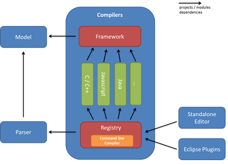
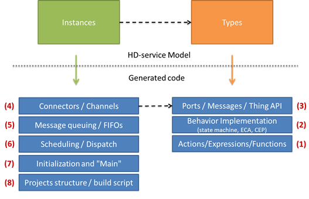

Extend the ThingML transformations to compile code for a new platform
When a platform expert needs to address a new platform, he typically needs to use the HEADS transformation framework, described in detail in D2.2. This modular Object-Oriented framework defines a set of extension points, each encapsulated as a Java class. For each different language (e.g. Java, JavaScript and C) each of these extension point typically needs to be redefined. For different dialects of the same language (e.g. C for Linux and C for the Arduino microcontrollers), the plaftorm expert can reuse already defined extension point and simply redefine a few of them to finely customize the code that is generated and accomodate with the contraints and specificities of the new platform.
Overview of the HEADS transformation framework
The HEADS code generation framework is structured in a set of modules. The figure 20 below the main sub-modules of the "Compilers" project as well as their dependencies. The idea is to have a compilation framework on top which only depends on the HEADS Model. This framework project, detailed later in this section, captures all the code and helpers to be shared between compilers. It also defines the interfaces (as abstract classes) for all the compilers. Below, individual modules correspond to the implementation of different families of compilers (Java, JavaScript, C, etc). The idea of these modules is to package together sets of compilers which have the same target languages (and typically share quite a lot of code). Finally, one the bottom, the registry module puts together all the compilers and provides a simple utility to execute them from the command line.

The idea of the code generation framework is to provide a way to independently customize different extension points. The figure below presents the 8 different extension points we have identified. Current implementation of the framework supports customizing all those extension points. However, at this point all developers are encouraged to propose and implement refactoring in order to make the APIs clear and as decoupled as possible.

The figure above presents the 8 extension points of the HEADS code generation framework. These extension points are separated in two groups: the ones corresponding to the generation of code for Types or "Things" and the ones corresponding to the generation of code for the Instances or Configuration.
Actions / Expressions / Functions
This part of the code generator corresponds to the code generated for actions, expressions and functions contained in a Thing. The generated code mostly depends on the language supported by the target platform (C, Java, etc.), and the code generators should be quite reusable across different platforms supporting the same language. The implementation of this extension point consists of a visitor on the Actions and Expressions part of the metamodel. New code generators can be created by inheriting from that abstract visitor and implementing all its methods. Alternatively, if only a minor modification of an existing code generator is needed, it is possible to inherit from the existing visitor and only override a subset of its methods.
Behavior Implementation
This part of the code generator corresponds to the code generated from the state machine structures, ECA and CEP rules contained in Things. There are main strategies and frameworks available in the literature in order to implement state machines. Depending on the capabilities, languages and libraries available on the target platform, the platform expert should have the flexibility of specifying how the behaviour is mapped to executable code. In some cases, the code generator can produce the entire code for the state machines, for example using a state machine design pattern in C++ or Java, and in other cases the code generator might rely on an existing framework available on the target platform, such as state.js for executing JavaScript state machines or ReactiveX for executing CEP queries in JavaScript or Java. To allow for this flexibility, the HEADS transformation framework should provide a set of helpers to traverse the different metaclasses responsible for modelling the behaviour and leave the freedom of creating new concrete generators and/or customizing existing code generator templates. In order to check the "correctness" of a particular code generator with respect to the language semantics, a set of reusable test cases has been created and should pass on any customized code generator.
Ports / Messages / Thing APIs
This part of the code generator corresponds to the wrapping of "things" into reusable components on the target platform. Depending on the target platform, the language and the context in which the application is deployed, the code generated for a "thing" can be tailored to generate either custom modules or to fit particular coding constraints or middleware to be used on the target platform. At this level, a Thing is a black box which should offer an API to send and receive messages through its ports. In practice this should be customized by the platform experts in order to fit the best practices and frameworks available on the target platform. As a best practice, the generated modules and APIs for things should be manually usable in case the rest of the system (or part of it) is written directly in the target language. For example, in object oriented languages, a facade and the observer pattern can be used to provide an easy to use API for the generated code. In C, a module with the proper header with structures and call-backs should be generated.
Connectors / Channels
This part of the code generator is in charge of generating the code corresponding to the connectors and transporting messages from one Thing to the next. This is the client side of the APIs generated for the Things. In practice the connector can connect two things running in the same process on a single platform or things which are remotely connected through some sort of network (from a simple serial link to any point to point communication over a network stack). The way the code is generated should be tailored to the specific way messages should be serialized, transmitted and de-serialized. In order to customize this part of the code generator, the HEADS framework offers a set of helpers which allow listing all messages to be transported and pruning unused messages in order to generate only the necessary code. The dispatch and queuing of the messages has been separated out from the serialization and transport in order to allow for more flexibility.
Message Queuing / FIFOs
This part of the generator is related to the connectors and channels but is specifically used to tailor how messages are handled when the connectors are between two things running on the same platform. When the connectors are between things separated by a network or some sort of inter-process communication, the asynchronous nature of messages is ensured by construction. However, inside a single process specific additional code should be generated in order to store messages in FIFOs and dispatch them asynchronously. Depending on the target platform, the platform expert might reuse existing message queues provided by the operating system or a specific framework. If no message queuing service is available, like on the Arduino platform for example, the code for the queues can be fully generated.
Scheduling / Dispatch
This part of the code generator is in charge of generating the code which orchestrates the set of Things running on one platform. The generated code should activate successively the state machines of each component and handle the dispatch of messages between the components using the channels and message queues. Depending on the target platform, the scheduling can be based on the use of operating system services, threads, an active object design pattern or any other suitable strategy.
Initialization and "Main"
This part of the code generator is in charge of generating the entry point and initialization code in order to set up and start the generated application on the target platform. The HEADS transformation framework provides some helpers to list the instances to be created, the connections to be made and the set of variables to be initialized together with their initial values.
Project structure / Build script
The last extension point is not generating code as such, but the required file structure and builds scripts in order to make the generated code well packaged and easy to compile and deploy on the target platform. The HEADS transformation framework provides access to all the buffers in which the code has been generated and allows creating the file structure which fits the particular target platform. For example, the Arduino compiler concatenates all the generated code into a single file which can be opened by the Arduino IDE. The Linux C code generator creates separate C modules with header files and generates a Makefile to compile the application. The Java and Scala code generators create Maven project and pom.xml files in order to allow compiling and deploying the generated code. The platform expert can customize the project structure and build scripts in order to fit the best practices of the target platform.
How to write a (family of) compiler(s)?
For the different extension point we have presented earlier, we will use concrete compilers that we have implemented to show how to write your own compiler.
Actions / Expressions / Functions
To illustrate the HEADS Action compiler and show how to implement a family of compilers, we will take the example of the C family, composed of two compilers: Linux/POSIX and Arduino. Those two compilers share most of their code and re-define a few extension points for the parts where they differ.
The HEADS action language is fairly aligned with common programming languages, such as Java, C or JavaScript. Most of the actions and expressions can actually be factorized in a generic class:
public class CommonThingActionCompiler extends ThingActionCompiler {
@Override
public void generate(ConditionalAction action, StringBuilder builder, Context ctx) {//if(...) {...} else {...}
builder.append("if(");
generate(action.getCondition(), builder, ctx);
builder.append(") {\n");
generate(action.getAction(), builder, ctx);
builder.append("\n}");
if (action.getElseAction() != null) {
builder.append(" else {\n");
generate(action.getElseAction(), builder, ctx);
builder.append("\n}");
}
builder.append("\n");
}
@Override
public void generate(LoopAction action, StringBuilder builder, Context ctx) {//while(...) {...}
builder.append("while(");
generate(action.getCondition(), builder, ctx);
builder.append(") {\n");
generate(action.getAction(), builder, ctx);
builder.append("\n}\n");
}
@Override
public void generate(PlusExpression expression, StringBuilder builder, Context ctx) {// ... + ...
generate(expression.getLhs(), builder, ctx);
builder.append(" + ");
generate(expression.getRhs(), builder, ctx);
}
@Override
public void generate(MinusExpression expression, StringBuilder builder, Context ctx) {// ... - ...
generate(expression.getLhs(), builder, ctx);
builder.append(" - ");
generate(expression.getRhs(), builder, ctx);
}
...
}
The ActionCompiler class basically defines a method for each of the concepts of the HEADS action language. It is thus possible to organize a hierarchy of sub-classes that gradually redfine those methods. For example, the general C compiler just need to redefine some methods (9 in total):
public abstract class CThingActionCompiler extends CommonThingActionCompiler {
@Override
public void generate(BooleanLiteral expression, StringBuilder builder, Context ctx) {
if (expression.isBoolValue())
builder.append("1");
else
builder.append("0");
}
...
}
Finally, the Linux/POSIX compiler only needs to redefine two methods related to printing on the standard/error output:
public class CThingActionCompilerPosix extends CThingActionCompiler {
@Override
public void generate(ErrorAction action, StringBuilder builder, Context ctx) {
final StringBuilder b = new StringBuilder();
generate(action.getMsg(), b, ctx);
builder.append("fprintf(stderr, " + b.toString() + ");\n");
}
@Override
public void generate(PrintAction action, StringBuilder builder, Context ctx) {
final StringBuilder b = new StringBuilder();
generate(action.getMsg(), b, ctx);
builder.append("fprintf(stdout, " + b.toString() + ");\n");
}
}
The same goes for the Arduino compiler:
public class CThingActionCompilerArduino extends CThingActionCompiler {
@Override
public void generate(ErrorAction action, StringBuilder builder, Context ctx) {
final StringBuilder b = new StringBuilder();
generate(action.getMsg(), b, ctx);
builder.append("// PRINT ERROR: " + b.toString());
}
@Override
public void generate(PrintAction action, StringBuilder builder, Context ctx) {
final StringBuilder b = new StringBuilder();
generate(action.getMsg(), b, ctx);
if (ctx.getCurrentConfiguration().hasAnnotation("arduino_stdout")) {
builder.append(ctx.getCurrentConfiguration().annotation("arduino_stdout").iterator().next() + ".print(" + b.toString() + ");\n");
} else {
builder.append("// PRINT: " + b.toString());
}
}
}
In case a platform expert wants to target a language that is very different from the Java/C/JavaScript family (e.g LISP using a prefix/Polish notation where a typical/infix
a + bwould be expressed+ a b), he might need to redefine all the concepts, directly by inheriting from the top classThingActionCompiler
Behavior Implementation
Different approaches exist when it comes to the compilation of the behavior (mostly state machine-based, with optional extensions for CEP):
- target and existing framework
- generate all code from scratch, including the code for how to dispatch event to concurrent regions, etc
Both approaches have pros and cons. Using a framework typically reduces the size and complexity of the code to be generated (and of the compilers), as most of the code is directly written in the framework. However, frameworks tend to be generic and might typically include more than what is needed, hence have a larger overhead. The full generative approach gives more flexibility and makes it possible to control each bits and bytes, and optimize the code for a particular state machine (whereas the framework needs to handle any possible state machine), but are typically more complex to implement.
The Java and JavaScript behavior compilers use a framework-based approach, which is rather idiomatic for those language, whereas the C compiler, which is expected to generate code able to run down to small micro-controllers (2KB RAM) uses a full generative approach to avoid any accidental overhead.
Because of the diversity of solutions that can be implemented for this extension point, the high level interface is rather generic so as not to constrain the platform expert:
public class ThingImplCompiler {
public void generateImplementation(Thing thing, Context ctx) {
}
}
Plaform experts are however encouraged to implement the generateImplementation method in a modular way, split into several sub-methods.
The following code snippet instantiate a composite state by using the state.js JavaScript library:
protected void generateCompositeState(CompositeState c, StringBuilder builder, Context ctx) {
String containerName = ctx.getContextAnnotation("container");
if (c.hasSeveralRegions()) {
builder.append("var " + c.qname("_") + " = new StateJS.Region(\"" + c.getName() + "\", " + containerName + ");\n");
builder.append("var " + c.qname("_") + "_default = new StateJS.Region(\"_default\", " + c.qname("_") + ");\n");
if (c.isHistory())
builder.append("var _initial_" + c.qname("_") + " = new StateJS.pseudoState(\"_initial\", " + c.qname("_") + ", StateJS.PseudoStateKind.ShallowHistory);\n");
else
builder.append("var _initial_" + c.qname("_") + " = new StateJS.pseudoState(\"_initial\", " + c.qname("_") + ", StateJS.PseudoStateKind.Initial);\n");
builder.append("_initial_" + c.qname("_") + ".to(" + c.getInitial().qname("_") + ");\n");
for (State s : c.getSubstate()) {
ctx.addContextAnnotation("container", c.qname("_") + "_default");
generateState(s, builder, ctx);
}
for (Region r : c.getRegion()) {
ctx.addContextAnnotation("container", c.qname("_"));
generateRegion(r, builder, ctx);
}
} else {
builder.append("var " + c.qname("_") + " = new StateJS.State(\"" + c.getName() + "\", " + containerName + ")");
generateActionsForState(c, builder, ctx);
builder.append(";\n");
for (State s : c.getSubstate()) {
ctx.addContextAnnotation("container", c.qname("_"));
generateState(s, builder, ctx);
}
}
if (c.isHistory())
builder.append("var _initial_" + c.qname("_") + " = new StateJS.PseudoState(\"_initial\", " + c.qname("_") + ", StateJS.PseudoStateKind.ShallowHistory);\n");
else
builder.append("var _initial_" + c.qname("_") + " = new StateJS.PseudoState(\"_initial\", " + c.qname("_") + ", StateJS.PseudoStateKind.Initial);\n");
builder.append("_initial_" + c.qname("_") + ".to(" + c.getInitial().qname("_") + ");\n");
}
Based on its extensive suite of tests, the HEADS transformation framework was able to detect a few bugs in the popular state.js library (~200 likes on GitHub and ~1000 Download a month on NPM), that were rapidly fixed by the repository maintainer.
Ports / Messages / Thing APIs
The goal of this extension point is to generate proper interface so that the generated code can easily be used and integrated by third-parties, using or not the HEADS technologies. For example a timer component which can receive two messages timer_start and timer_cancel on a port timer and can emit a timer_timeout message on a port timer can be addressed in Java through a couple of interface (the second one serving as a callback):
public interface ITimerJava_timer{
void timer_start_via_timer(short TimerMsgs_timer_start_delay__var);
void timer_cancel_via_timer();
}
public interface ITimerJava_timerClient{
void timer_timeout_from_timer();
}
A third-party wanting to use this simple HEADS-enabled timer would thus, in plain Java implement ITimerJava_timerClient interface, and after instantiating a timer, register as a listener:
TimerJava timer = new TimerJava().buildBehavior();
timer.registerOnTimer(new ITimerJava_timerClient(){
@Override
timer_timeout_from_timer(){
System.out.println("timeout!");
}
});
timer.init();
timer.start();
timer.timer_start_via_timer(5000);//timeout! to be displayed in 5000 ms
Similarly in JavaScript:
// Public methods on the timer
TimerJS.prototype.timer_startOntimer = function(delay) {
...
};
TimerJS.prototype.timer_cancelOntimer = function() {
...
};
var timer = new TimerJS();
timer.build();
timer.getTimer_timeoutontimerListeners().push(function(){console.log("timeout!");});
timer.init();
timer.timer_startOntimer(5000);//timeout! to be displayed in 5000 ms
And in C:
void TimerLinux_handle_timer_timer_start(struct TimerLinux_Instance *_instance, int delay);
void TimerLinux_handle_timer_timer_cancel(struct TimerLinux_Instance *_instance);
void register_external_TimerLinux_send_timer_timer_timeout_listener(void (*_listener)(struct TimerLinux_Instance *));
void printCallBack(){
fprintf("timeout!\n");
}
struct TimerLinux_Instance TestTimerLinux_timer_var;
register_TimerLinux_send_timer_timer_timeout_listener(&printCallBack);
TimerLinux_handle_timer_timer_start(&TestTimerLinux_timer_var, 5000);//timeout! to be displayed in 5000 ms
As this code is only structural (basically a set of methods), it is fairly easy to generate. Here is how we generate Java interfaces of components:
//Generate interfaces that the thing will implement, for others to call this API
for (Port p : thing.allPorts()) {
if (!p.isDefined("public", "false") && p.getReceives().size() > 0) {
final StringBuilder builder = ctx.getBuilder(src + "/api/I" + ctx.firstToUpper(thing.getName()) + "_" + p.getName() + ".java");
builder.append("package " + pack + ".api;\n\n");
builder.append("import " + pack + ".api.*;\n\n");
builder.append("public interface " + "I" + ctx.firstToUpper(thing.getName()) + "_" + p.getName() + "{\n");
for (Message m : p.getReceives()) {
builder.append("void " + m.getName() + "_via_" + p.getName() + "(");
JavaHelper.generateParameter(m, builder, ctx);
builder.append(");\n");
}
builder.append("}");
}
}
Connectors / Channels
In HEADS, connectors and channels are managed by the HEADS runtime. By default the generated code is "standalone" and can be run without the HEADS runtime. To be able to run on the HEADS runtime, this require some wrappers around the implementation. Those wrappers are generated and only interact with the public interface of the component (as a developper would normally write). For example, the following code generates for the JavaScript HEADS runtime. A more conceptual view of this wrapping is provided in D2.2.
private void generateWrapper(Context ctx, Configuration cfg) {
final StringBuilder builder = ctx.getBuilder(cfg.getName() + "/lib/" + cfg.getName() + ".js");
builder.append("var AbstractComponent = require('kevoree-entities').AbstractComponent;\n");
for (Thing t : cfg.allThings()) {//load of the fined-grained component into the coarse grained component
builder.append("var " + t.getName() + " = require('./" + t.getName() + "');\n");
}
builder.append("/**\n* Kevoree component\n* @type {" + cfg.getName() + "}\n*/\n");
builder.append("var " + cfg.getName() + " = AbstractComponent.extend({\n");
builder.append("toString: '" + cfg.getName() + "',\n");
builder.append("construct: function() {\n");
JSCfgMainGenerator.generateInstances(cfg, builder, ctx, true);
for (Map.Entry e : cfg.danglingPorts().entrySet()) {
final Instance i = (Instance) e.getKey();
for (Port p : (List<Port>) e.getValue()) {
for (Message m : p.getSends()) {
builder.append("this." + i.getName() + ".get" + ctx.firstToUpper(m.getName()) + "on" + p.getName() + "Listeners().push(this." + shortName(i, p, m) + "_proxy.bind(this));\n");
}
}
}
builder.append("},\n\n");
builder.append("start: function (done) {\n");
for (Instance i : cfg.danglingPorts().keySet()) {
builder.append("this." + i.getName() + "._init();\n");
}
builder.append("done();\n");
builder.append("},\n\n");
builder.append("stop: function (done) {\n");
for (Instance i : cfg.allInstances()) {
builder.append("this." + i.getName() + "._stop();\n");
}
builder.append("done();\n");
builder.append("}");
for (Map.Entry e : cfg.danglingPorts().entrySet()) {
final Instance i = (Instance) e.getKey();
for (Port p : (List<Port>) e.getValue()) {
for (Message m : p.getReceives()) {
builder.append(",\nin_" + shortName(i, p, m) + "_in: function (msg) {\n");
builder.append("this." + i.getName() + ".receive" + m.getName() + "On" + p.getName() + "(msg.split(';'));\n");
builder.append("}");
}
}
}
for (Map.Entry e : cfg.danglingPorts().entrySet()) {
final Instance i = (Instance) e.getKey();
for (Port p : (List<Port>) e.getValue()) {
for (Message m : p.getSends()) {
builder.append(",\n" + shortName(i, p, m) + "_proxy: function() {this.out_" + shortName(i, p, m) + "_out(");
int index = 0;
for (Parameter pa : m.getParameters()) {
if (index > 0)
builder.append(" + ';' + ");
builder.append("arguments[" + index + "]");
index++;
}
if (index > 1)
builder.append("''");
builder.append(");}");
builder.append(",\nout_" + shortName(i, p, m) + "_out: function(msg) {/* This will be overwritten @runtime by Kevoree JS */}");
}
}
}
builder.append("});\n\n");
builder.append("module.exports = " + cfg.getName() + ";\n");
}
Message queuing / Scheduling / Dispatch
This extension point allows customizing the code generated for handling how the messages and the control are distributed among of set of component instances. From a semantic point of view, each component instance is an independent process which exchanges messages with other components in an asynchronous way. To implement this semantic, a wide range of alternatives for queuing messages, distributing them to the components can be used depending on the capabilities of the targeted platforms. Features for message exchange and multi-tasking are typically provided by operating systems or middleware platforms. In the case of resource constrained devices with no operating system, code has to be generated to fully handle the scheduling and message dispatch between components.
The API for customizing the code generator for those aspect is in class "org.thingml.compilers.configuration.CfgMainGenerator" and its sub-classes for the different platforms.
The example bellow shows how messages are queued when generating code for microcontrollers. The generated code includes a compact FIFO implementation for storing messages. The messages are serialized in the FIFO when they are emitted by a component and later processed and dispatched to the receiving components.
// Enqueue of messages HelloTimer::timer::timer_start
void enqueue_HelloTimer_send_timer_timer_start(struct HelloTimer_Instance *_instance, int delay){
if ( fifo_byte_available() > 6 ) {
_fifo_enqueue( (3 >> 8) & 0xFF );
_fifo_enqueue( 3 & 0xFF );
// ID of the source port of the instance
_fifo_enqueue( (_instance->id_timer >> 8) & 0xFF );
_fifo_enqueue( _instance->id_timer & 0xFF );
// parameter delay
union u_delay_t {
int p;
byte bytebuffer[2];
} u_delay;
u_delay.p = delay;
_fifo_enqueue( u_delay.bytebuffer[1] & 0xFF );
_fifo_enqueue( u_delay.bytebuffer[0] & 0xFF );
}
}
The following listing shows how the messages are dispatched from the FIFO to the appropriate component.
void processMessageQueue() {
if (fifo_empty()) return; // return if there is nothing to do
byte mbuf[4];
uint8_t mbufi = 0;
// Read the code of the next port/message in the queue
uint16_t code = fifo_dequeue() << 8;
code += fifo_dequeue();
// Switch to call the appropriate handler
switch(code) {
case 2:
while (mbufi < 2) mbuf[mbufi++] = fifo_dequeue();
dispatch_timer_cancel((mbuf[0] << 8) + mbuf[1] /* instance port*/);
break;
case 3:
while (mbufi < 4) mbuf[mbufi++] = fifo_dequeue();
union u_timer_start_delay_t {
int p;
byte bytebuffer[2];
} u_timer_start_delay;
u_timer_start_delay.bytebuffer[1] = mbuf[2];
u_timer_start_delay.bytebuffer[0] = mbuf[3];
dispatch_timer_start((mbuf[0] << 8) + mbuf[1] /* instance port*/,
u_timer_start_delay.p /* delay */ );
break;
case 1:
while (mbufi < 2) mbuf[mbufi++] = fifo_dequeue();
dispatch_timer_timeout((mbuf[0] << 8) + mbuf[1] /* instance port*/);
break;
}
}
In the Arduino code generator, the main loop of the scheduler simply activates the components which use polling and processes messages from the queue. The component receiving a message is given the CPU for processing this message. Any message produced by the component is queued and will be later processed by the receiver. This strategy ensures that each component gets activated in turn and that the processing of a message in executed as a whole. In the case of microcontrollers, it can be interrupted by microcontroller interrupts but not by the processing of another message.
void loop() {
TimerArduino_handle_Polling_poll(&TestTimerArduino_timer_var);
HelloTimer_handle_empty_event(&TestTimerArduino_client_var);
processMessageQueue();
}
Depending on the level of dynamicity required, code can be generated statically for one particular configuration (and set of connector), but even on tiny and small targets code can be generated to handle dynamically dispatching messages according to a dynamic set of connectors. The code bellow illustrates how it is done in the Arduino compiler.
//Dynamic dispatch for message timer_start
void dispatch_timer_start(uint16_t sender, int param_delay) {
void executor_dispatch_timer_start(struct Msg_Handler ** head, struct Msg_Handler ** tail) {
struct Msg_Handler ** cur = head;
while (cur != NULL) {
void (*handler)(void *, int param_delay) = NULL;
int i;
for(i = 0; i < (**cur).nb_msg; i++) {
if((**cur).msg[i] == 2) {
handler = (void (*) (void *, int)) (**cur).msg_handler[i];
break;
}
}
if(handler != NULL) {
handler((**cur).instance, param_delay);
}
if(cur == tail){
cur = NULL;}
else {
cur++;}
}
}
if (sender == TestTimerC_client_var.id_timer) {
executor_dispatch_timer_start(TestTimerC_client_var.timer_receiver_list_head, TestTimerC_client_var.timer_receiver_list_tail);}
}
Initialization and "Main"
This extension point is responsible for instantiating components and properly set the attributes of these instances with proper values. It is also responsible for connecting instances together. Here is an example of a "main" in JavaScript:
//import types
var TimerJS = require('./TimerJS');
var SimpleTimerClient = require('./SimpleTimerClient');
//Create and initialize instances
var TestTimerJS_timer = new TimerJS("TestTimerJS_timer", false);
TestTimerJS_timer.setThis(TestTimerJS_timer);
TestTimerJS_timer.build();
var TestTimerJS_client = new SimpleTimerClient("TestTimerJS_client", 1000, 5000, true);
TestTimerJS_client.setThis(TestTimerJS_client);
TestTimerJS_client.build();
//Connect instances together
TestTimerJS_timer.getTimer_timeoutontimerListeners().push(TestTimerJS_client.receivetimer_timeoutOntimer.bind(TestTimerJS_client));
TestTimerJS_client.getTimer_startontimerListeners().push(TestTimerJS_timer.receivetimer_startOntimer.bind(TestTimerJS_timer));
TestTimerJS_client.getTimer_cancelontimerListeners().push(TestTimerJS_timer.receivetimer_cancelOntimer.bind(TestTimerJS_timer));
//start instances
TestTimerJS_timer._init();
TestTimerJS_client._init();
//register hookup to properly stop instances
process.on('SIGINT', function () {
console.log("Stopping components...");
TestTimerJS_timer._stop();
TestTimerJS_client._stop();
});
The plaform expert needs to extend the following class to generate the main:
public class CfgMainGenerator {
public void generateMainAndInit(Configuration cfg, ThingMLModel model, Context ctx) {
}
}
The following code snippet illustrate how to generate the code for the connectors:
for (Connector c : cfg.allConnectors()) {
for (Message req : c.getRequired().getReceives()) {
for (Message prov : c.getProvided().getSends()) {
if (req.getName().equals(prov.getName())) {
builder.append(prefix + c.getSrv().getInstance().getName() + ".get" + ctx.firstToUpper(prov.getName()) + "on" + c.getProvided().getName() + "Listeners().push(");
builder.append(prefix + c.getCli().getInstance().getName() + ".receive" + req.getName() + "On" + c.getRequired().getName() + ".bind(" + prefix + c.getCli().getInstance().getName() + ")");
builder.append(");\n");
break;
}
}
}
for (Message req : c.getProvided().getReceives()) {
for (Message prov : c.getRequired().getSends()) {
if (req.getName().equals(prov.getName())) {
builder.append(prefix + c.getCli().getInstance().getName() + ".get" + ctx.firstToUpper(prov.getName()) + "on" + c.getRequired().getName() + "Listeners().push(");
builder.append(prefix + c.getSrv().getInstance().getName() + ".receive" + req.getName() + "On" + c.getProvided().getName() + ".bind(" + prefix + c.getSrv().getInstance().getName() + ")");
builder.append(");\n");
break;
}
}
}
}
Project structure / Build script
To make the HEADS components easily reusable, with our without the HEADS technologies, they must be properly package. For Java, we for example generate proper Maven project, for JavaScript, NPM projects, and for C, Makefile. If a platform expert would like to use Gradle instead of manage, he would need to re-define the following extension point:
public class CfgBuildCompiler {
public void generateBuildScript(Configuration cfg, Context ctx) {
throw (new UnsupportedOperationException("Project structure and build scripts are platform-specific."));
}
}
Here is for example how we generate a package.json for NPM projects:
public class JSCfgBuildCompiler extends CfgBuildCompiler {
@Override
public void generateBuildScript(Configuration cfg, Context ctx) {
try {
final InputStream input = this.getClass().getClassLoader().getResourceAsStream("javascript/lib/package.json");
final List<String> packLines = IOUtils.readLines(input);
String pack = "";
for (String line : packLines) {
pack += line + "\n";
}
input.close();
pack = pack.replace("<NAME>", cfg.getName());
final JsonObject json = JsonObject.readFrom(pack);
final JsonValue deps = json.get("dependencies");
for (Thing t : cfg.allThings()) {
for (String dep : t.annotation("js_dep")) {
deps.asObject().add(dep.split(":")[0].trim(), dep.split(":")[1].trim());
}
}
boolean addCEPdeps = false;
boolean addDebugDeps = !ctx.getCompiler().getDebugProfiles().isEmpty();
for (Thing t : cfg.allThings()) {
if (t.getStreams().size() > 0) {
addCEPdeps = true;
}
}
if(addCEPdeps) {
deps.asObject().add("rx", "^2.5.3");
deps.asObject().add("events", "^1.0.2");
}
if(addDebugDeps) {
deps.asObject().add("colors", "^1.1.2");
}
final File f = new File(ctx.getOutputDirectory() + "/" + cfg.getName() + "/package.json");
f.setWritable(true);
final PrintWriter w = new PrintWriter(new FileWriter(f));
w.println(json.toString());
w.close();
} catch (Exception e) {
e.printStackTrace();
}
}
}
This would produce this kind of output:
{
"name" : "TestTimerJS",
"version" : "1.0.0",
"description" : "TestTimerJS configuration generated from ThingML",
"main" : "main.js",
"private" : true,
"dependencies" : {
"state.js" : "^5.3.4",
"colors" : "^1.1.2"
},
"devDependencies" : {},
"scripts" : {}
}
Note that this compiler (as well as others) uses a template to simplify the code generation, since most of the content of package.json is fixed:
{
"name": "<NAME>",
"version": "1.0.0",
"description": "<NAME> configuration generated from ThingML",
"main": "main.js",
"private": true,
"dependencies": {
"state.js": "^5.3.4"
},
"devDependencies": {
},
"scripts": {
}
}
Lightweight extension to existing compilers
When new target languages, operating systems or core libraries need to be supported, the platform expert has to extend the ThingML compilers/transformation. The ThingML compilers are modular so that different parts can be reused and extended separately.
ThingML supports for adding annotations on most elements of the language. The platform expert can define specific annotations which are exploited in the code generator in order to support platform specific features.
For example, a thing dealing with IO typically needs to listen continuously for inputs to arrive. This behavior should be executed in a separate thread so that it does not block or slow down the execution of the core business logic. This multi-threaded behavior can be achieved in the Linux/C compiler using the @fork_linux_thread annotation.
function serial_receiver_process()
@fork_linux_thread "true"
do
var buffer : Byte[256] // Data read from the serial port
while (true) {
//read bytes from serial port
}
end
The C compiler will interprete this annotation and generate multi-threaded code, which wraps the code) normally generated by the compiler without that annotation:
if (func.isDefined("fork_linux_thread", "true")) {
generateCforThingLinuxThread(func, thing, builder, ctx);
} else { // Use the default function generator
generateCforThingDirect(func, thing, builder, ctx);
}
If an annotation is intensively used and relevant for most compilers, the concept can be promoted directly into the language so that it can be benefit from better tool support (annotations being simple string-based key/value entries). The extension of the HEADS modelling language is however beyond the scope of the HEADS project, but interested reader can read about the way we extended the language to support Complex Event Processing.